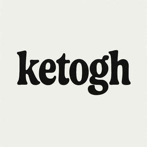

Trade Mark Journal No.2025/027 4 July 2025
UK00004222662 22 June 2025 (5)

- Class 5
- Dietary food supplements used for modified fasting; Glucose dietary supplements; Food for medically restricted diets; Casein dietary supplements; Protein dietary supplements; Soy protein dietary supplements; Flaxseed dietary supplements; Whey protein dietary supplements; Hypoglycemic drugs; Enzyme dietary supplements; Wheat dietary supplements; Yeast dietary supplements; Dietary supplements for controlling cholesterol; Flaxseed oil dietary supplements; Albumin dietary supplements; Diet capsules; Liquid dietary supplements; Alginate dietary supplements; Anticonvulsants; Antiseizure drugs; Folic acid dietary supplements; Dietary supplements promoting fitness and endurance; Dietary and nutritional supplements; Dietary supplements for infants; Linseed dietary supplements; Royal jelly dietary supplements; Lecithin dietary supplements; Dietary supplements; Dietetic foods for use in clinical nutrition; Soy isoflavone dietary supplements; Wheat germ dietary supplements; Fat emulsions for parenteral hyperalimentation; Protein powder dietary supplements; Insulin; Linseed oil dietary supplements; Dietary food supplements; Brewer's yeast dietary supplements; Chlorella dietary supplements; Nutraceuticals for use as a dietary supplement; Dietary supplements for humans; Dietary supplements and dietetic preparations; Zinc dietary supplements; Dietary supplements for animals; Antiepileptic drugs; Acai powder dietary supplements; Dietary supplements and dietetic preparations containing CBD oil; Parenteral anti-epileptic pharmaceutical preparations; Medicated sugar; Propolis dietary supplements; Protein supplements; Pharmaceutical preparations for the treatment of epilepsy; Liquid nutritional supplements; Food for diabetics; Dietary supplements for medical use; Vitamin supplements for use in renal dialysis; Dietary and nutritional preparations; Diabetic bread adapted for medical use; Bread (Diabetic -) adapted for medical use; Dietetic foods adapted for infants; Medicated additives for animal foods; Low-salt bread adapted for medical use; Oral anti-epileptic pharmaceutical preparations; Glucose for use as an additive to foods for medical purposes; Medicated food supplements; Prebiotic supplements; Pharmaceutical preparations for treating hypoglycemia; Dietetic foods adapted for the disabled; Pharmaceutical preparations for the treatment of autoimmune disorders; Nutritional supplements made of starch adapted for medical use; Natural dietary supplements for treating claustrophobia; Anti-epileptic pharmaceutical preparations; Ground flaxseed fiber for use as a dietary supplement; Fat emulsions for medical infusions; Non-steroidal anti-inflammatory drugs; Anti-cancer drugs; Mineral dietary supplements; Nutritional supplements; Homeopathic supplements; Dietetic foods adapted for medical use; Mineral dietary supplements for animals; Dietary supplemental drinks; L-carnitine for weight loss; Protein supplements for animals; Dietary supplements for pets; Mineral dietary supplements for humans; Pharmaceutical preparations for treating metabolic disorders; Dietary supplements consisting primarily of magnesium; Pharmaceutical preparations for the treatment of disorders of the metabolic system; Sugar substitutes for diabetics; Metabolic detoxifying agents.
Aaron Keogh